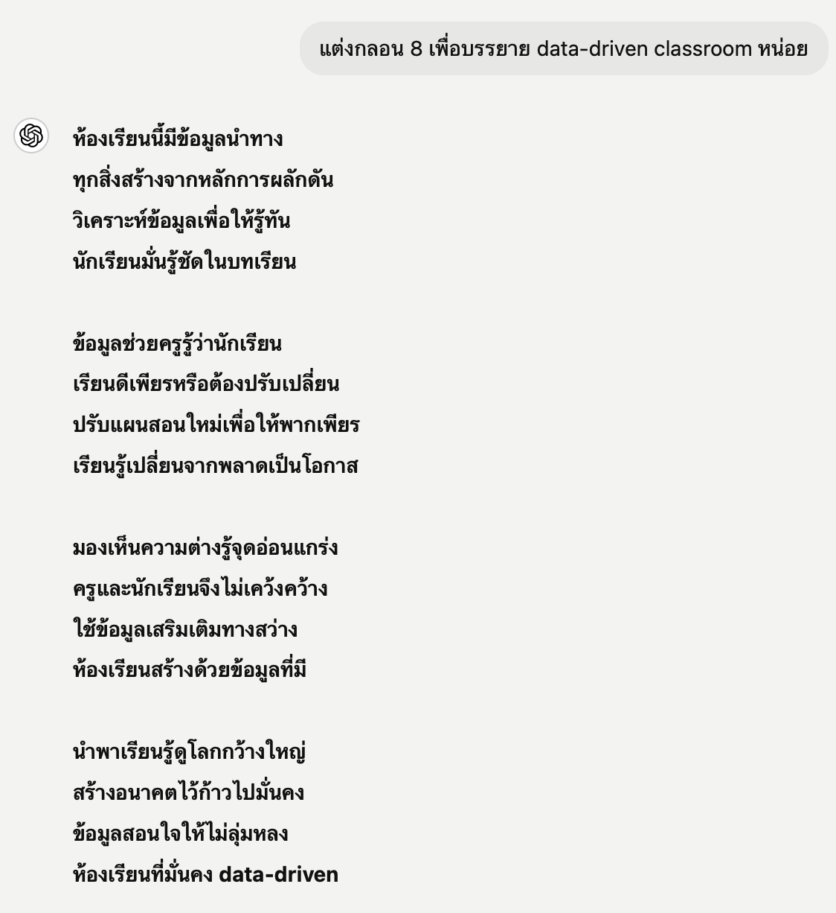
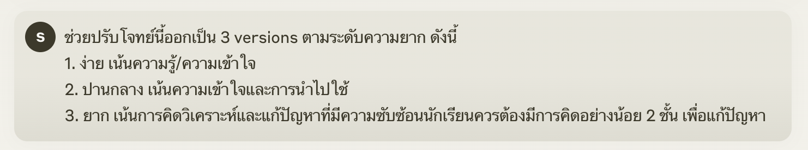
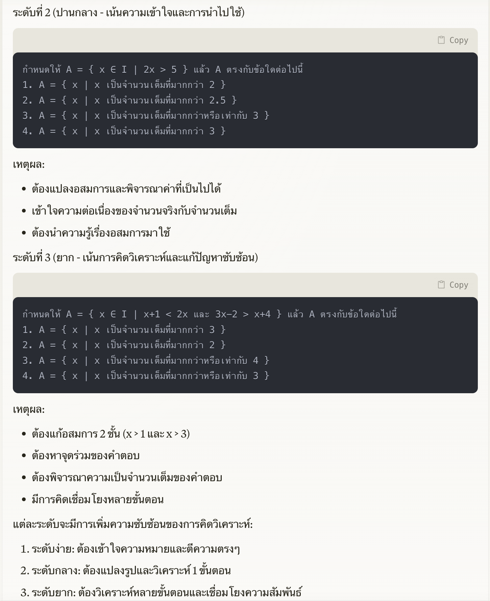
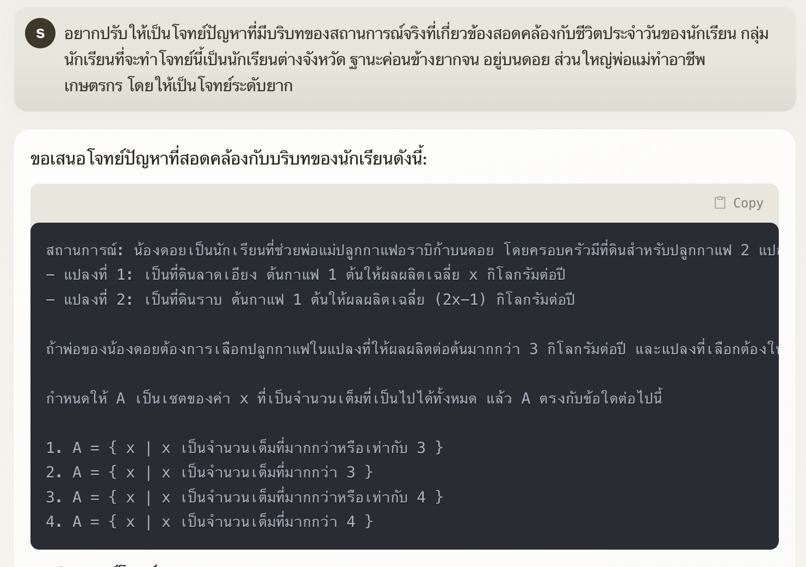
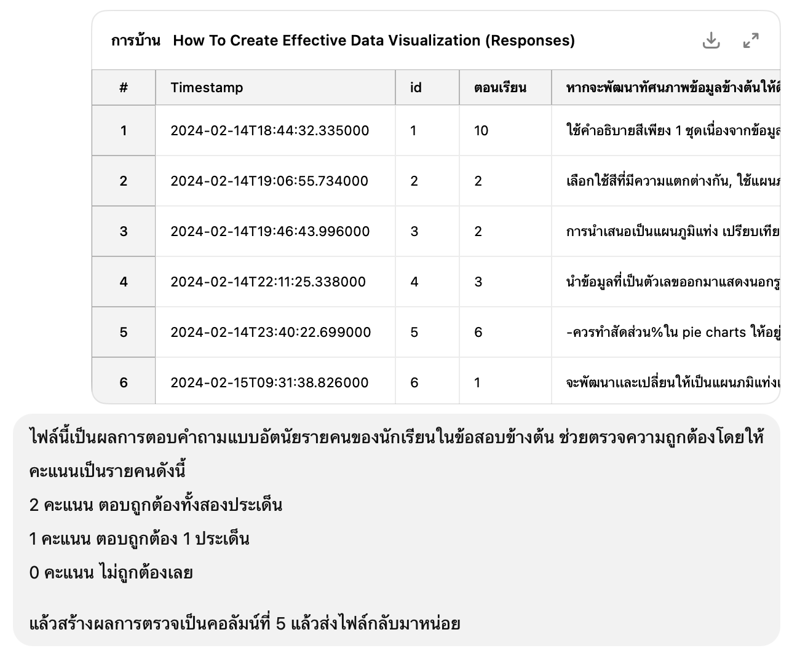
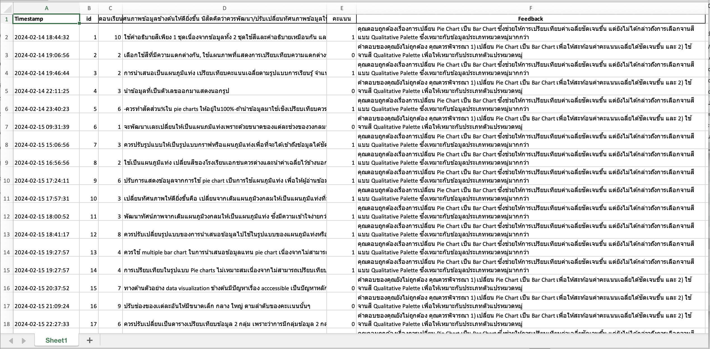

flowchart LR
A["User \n Input"] --> B["Natural Language \n Processing"]
B -->|"Emotion & \n Intent Recognition"| C{"Machine \n Learning"}
C -->|"Pattern \n Recognition"| D{"Cognitive Behavioral \n Therapy (CBT)"}
D -->|"Select Therapy \n Technique"| E["Woebot \n Response"]
E -->|"Feedback"| C
AI in Education
2025-02-10
What’s AI?
ศาสตร์ที่ว่าด้วยการจำลองสติปัญญาของมนุษย์ในเครื่องจักร โดยมีวัตถุประสงค์เพื่อให้เครื่องจักรหรือระบบคอมพิวเตอร์มีความสามารถในการคิด เรียนรู้ วิเคราะห์ และตัดสินใจเหมือนกับมนุษย์
AI ไม่ใช่แค่หุ่นยนต์ แต่ครอบคลุมอัลกอริทึม application และโมเดลที่สามารถคิด วิเคราะห์และตัดสินใจได้เอง
AI อยู่รอบตัวเราในชีวิตประจำวัน

What’s AI?

https://www.datakeen.co/what-is-artificial-intelligence-3/ (2020)
What’s AI?

A General Introduction to Artificial Intelligence (2023)

https://www.datakeen.co/what-is-artificial-intelligence-3/ (2020)

Predictive and Analytical AI
Language & Conversational AI
Generative AI
Perception AI
Automation & Control AI
Recommendation/Decision Support System
AI in the Modern World


https://miro.medium.com/v2/resize:fit:1400/format:webp/1*QKQA8ylu1lCtOkJaa_gGaw.png
AI in the Modern World

AI in the Modern World

“Using two types of neural network - mathematical systems for identifying patterns in images or data - the Al system quickly learnt to identify ten features of eye disease from highly complex optical coherence tomography (OCT) scans. The system was then able to recommend a referral decision based on the most urgent conditions detected.” … “Al was able to make the right referral recommendation more than 94% of the time …”
Diabetic Retinopathy
Age-related Macular Degeneration
Glaucoma
Retinal Detachment
Optic Neuropathy
https://www.ucl.ac.uk/ioo/news/2018/aug/artificial-intelligence-equal-experts-detecting-eye-diseases (2018)
AI in the Modern World
AI in the Modern World

https://woebothealth.com/(2025)

https://www.youper.ai/how-it-works
AI in the Modern World

https://knihovna.utb.cz/en/services/tools/grammarly/
AI in the Modern World
AI ไม่ได้ถูกใช้เพียงแค่ในการวิเคราะห์ข้อมูลเท่านั้น แต่ยังสามารถ สร้างเนื้อหา ได้ เช่น ข้อความ รูปภาพ เสียง และวิดีโอ

https://www.xenonstack.com/blog/generative-ai-applications

https://www.zendesk.com.br/blog/generative-ai-guide/
Education 4.0
“A Global Framework for Shifting Learning Content and Experiences Towards the Needs of the Future”
ปรับตัวให้ยืดหยุ่น
ใช้เทคโนโลยีเป็นเครื่องมือ
พัฒนาทักษะที่ตอบโจทย์อนาคต

World Economic Forum (2020)
AI-Powered Data-Driven Classroom

Generative AI


https://jasmine880809.medium.com/5-ai-trends-happened-in-2024-chatgpt-claude-gemini-and-perplexity-f59fcd4904ff
Generative AI


Generative AI: Stochastic Nature


Quiz/Problem Generator
สร้างข้อสอบวิชาสถิติ เรื่อง "สหสัมพันธ์" สำหรับนักศึกษาระดับปริญญาตรี
โดยข้อสอบต้องมีลักษณะดังนี้:
1. **จำนวนข้อ:** 10 ข้อ
2. **ประเภทข้อสอบ:** ปรนัย (Multiple Choice) 4 ตัวเลือก จำนวน 5 ข้อ และ อธิบายสั้น (Short Answer) จำนวน 5 ข้อ
3. **ระดับความยาก:** ปานกลาง 60% สูง 40%
4. **หัวข้อที่ครอบคลุม:**
- ความหมายของสหสัมพันธ์ 10%
- การคำนวณค่าสัมประสิทธิ์สหสัมพันธ์ (เช่น Pearson, Spearman, Phi, Chi-square) 10%
- การแปลผลค่าสหสัมพันธ์ 40%
- ความแตกต่างระหว่างสหสัมพันธ์กับความสัมพันธ์เชิงสาเหตุ 20%
- ข้อจำกัดของการวิเคราะห์สหสัมพันธ์ 20%
5. สถานการณ์เป็นการใช้สหสัมพันธ์ในการวิเคราะห์ข้อมูลในชั้นเรียนหรือบริบททางการศึกษา
**รายละเอียดเพิ่มเติม:**
- โปรดสร้างตัวเลือกคำตอบให้มีทั้ง **คำตอบที่ถูกต้อง** และ **คำตอบที่ใกล้เคียงแต่ผิด** เพื่อท้าทายผู้เรียน
- ระบุ **เฉลย** และอธิบายเหตุผลของคำตอบที่ถูกต้องในแต่ละข้อ
- ถ้าเป็นข้อคำนวณ ให้ใส่ตัวเลขที่สมเหตุสมผลและมีวิธีทำ
**ตัวอย่างผลลัพธ์ที่ต้องการ:**
---
**ข้อที่ 1:** สหสัมพันธ์ (Correlation) หมายถึงอะไร?
A) การแสดงความสัมพันธ์เชิงเหตุและผลระหว่างตัวแปรสองตัว
B) การวัดระดับความสัมพันธ์ระหว่างตัวแปรสองตัว
C) การเปรียบเทียบค่ากลางของข้อมูลสองชุด
D) การทดสอบว่าสองตัวแปรมีค่าเฉลี่ยแตกต่างกันหรือไม่
✅ **เฉลย:** B) การวัดระดับความสัมพันธ์ระหว่างตัวแปรสองตัว
💡 **อธิบาย:** สหสัมพันธ์ใช้วัดความแข็งแกร่งของความสัมพันธ์ระหว่างตัวแปรสองตัว แต่ไม่ได้หมายความว่าเป็นเหตุและผล
---
**ข้อที่ 2:** ค่า Pearson’s correlation coefficient มีค่าอยู่ในช่วงใด?
A) -∞ ถึง ∞
B) 0 ถึง 1
C) -1 ถึง 1
D) -2 ถึง 2
✅ **เฉลย:** C) -1 ถึง 1
💡 **อธิบาย:** ค่า Pearson’s correlation coefficient อยู่ระหว่าง -1 ถึง 1 โดยที่ค่า -1 หมายถึงความสัมพันธ์เชิงลบสมบูรณ์, 0 หมายถึงไม่มีความสัมพันธ์ และ 1 หมายถึงความสัมพันธ์เชิงบวกสมบูรณ์
---

Differentiated Problems

http://www.pccm.ac.th/tinymce/home/articles/2018103101/Teacher-Share-Set-M4.pdf
Differentiated Problems
http://www.pccm.ac.th/tinymce/home/articles/2018103101/Teacher-Share-Set-M4.pdf

Differentiated Problems



Differentiated Problems


Automate Essay Scoring



Statistical Problem Process

https://www.amstat.org/asa/files/pdfs/GAISE/GAISEIIPreK-12_Full.pdf
Claude


Qualitative Data Analysis
Generative AI มีความสามารถในการวิเคราะห์ข้อมูลเชิงคุณภาพ โดยเฉพาะข้อมูลที่มีลักษณะเป็น essay ได้ดี จุดเด่นนี้ทำให้ครูและผู้เกี่ยวข้องสามารถนำข้อมูลที่เป็นลักษณะข้อความเข้ามาวิเคราะห์เพื่อสร้างสารสนเทศเชิงลึกของผู้เรียนได้

References

“A General Introduction to Artificial Intelligence.” 2023. In Artificial Intelligence Technology, 1–41. Singapore: Springer Nature Singapore. https://doi.org/10.1007/978-981-19-2879-6_1.
Bolz, Michael J., and Vidya Madhavan. 2023. “What Is Data-Driven Instruction in Education?” https://www.hmhco.com/blog/what-is-data-driven-instruction.
Gaël. 2020. “What Is Artificial Intelligence?” https://www.datakeen.co/what-is-artificial-intelligence-3/.
Haderer, Bernhard, and Monica Ciolacu. 2022. “Education 4.0: Artificial Intelligence Assisted Task- and Time Planning System.” Procedia Computer Science 200: 1328–37. https://doi.org/10.1016/j.procs.2022.01.334.
HR NOTE Thailand. 2021. “รู้จักยุค 4IR: อุตสาหกรรม 4.0 คืออะไรและมีผลกระทบอย่างไรต่อการทำงาน?” https://th.hrnote.asia/tips/industrial-revolution-4ir-210618/?t.
Jumper, John, Richard Evans, Alexander Pritzel, et al. 2021. “Highly Accurate Protein Structure Prediction with AlphaFold.” Nature 596: 583–89. https://doi.org/10.1038/s41586-021-03819-2.
Mansfield, Lucy A., Peer J. Nowack, Mehran Kasoar, et al. 2020. “Predicting Global Patterns of Long-Term Climate Change from Short-Term Simulations Using Machine Learning.” Npj Climate and Atmospheric Science 3: 44. https://doi.org/10.1038/s41612-020-00148-5.
McKinney, Scott M., Marcin Sieniek, Varun Godbole, et al. 2020. “International Evaluation of an AI System for Breast Cancer Screening.” Nature 577: 89–94. https://doi.org/10.1038/s41586-019-1799-6.
Pyzer-Knapp, Edward O., Jeffrey W. Pitera, Peter W. J. Staar, et al. 2022. “Accelerating Materials Discovery Using Artificial Intelligence, High Performance Computing and Robotics.” Npj Computational Materials 8: 84. https://doi.org/10.1038/s41524-022-00765-z.
RIB Software. 2024. “Data-Driven Decision Making in Businesses.” https://www.rib-software.com/en/blogs/data-driven-decision-making-in-businesses.
Srisuttiyakorn, Siwachoat, Kanit Sriklaub, Prapasiri Ratchaprapapornkul, and Watinee Amornpaisarnlert. 2024. “Technical Assistance for Mapping Education Data to Thailand Child-Sensitive Climate Change Risk.” Research Report. UNICEF.
UCL Institute of Ophthalmology. 2018. “Artificial Intelligence Equal to Experts in Detecting Eye Diseases.” https://www.ucl.ac.uk/ioo/news/2018/aug/artificial-intelligence-equal-experts-detecting-eye-diseases.
UNESCO. 2024a. “AI Competency Framework for Students.” Paris, France: United Nations Educational, Scientific; Cultural Organization (UNESCO). https://doi.org/10.54675/JKJB9835.
———. 2024b. “AI Competency Framework for Teachers.” Paris, France: United Nations Educational, Scientific; Cultural Organization (UNESCO). https://doi.org/10.54675/ZJTE2084.
Woebot Health. 2025. “Woebot Health: Scalable Enterprise Solution for Mental Health.” https://woebothealth.com/.
World Economic Forum. 2020. “Schools of the Future: Defining New Models of Education for the Fourth Industrial Revolution.” Geneva, Switzerland: World Economic Forum. https://www.weforum.org/reports/schools-of-the-future-defining-new-models-of-education-for-the-fourth-industrial-revolution.